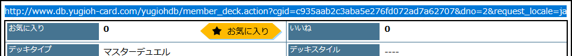
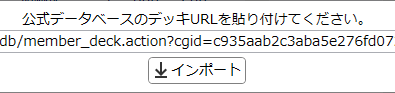
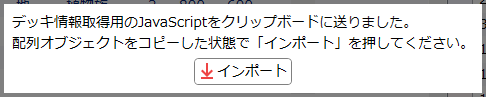
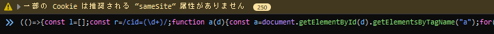
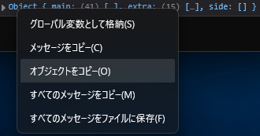
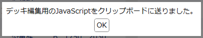
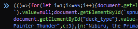

注意
実用上の利便性のため、以下の仕様となっています。-
デッキ/EXデッキ/サイドデッキのそれぞれでカードは100種類まで投入できます。
- 100種類を超えてカードを追加しようとした場合、超えるぶんは無視されます。
-
リミットレギュレーションを無視して全てのカードを3枚まで採用できます。
- 使用不可カードも採用できます。
- 参考としてカードにはリミットアイコンが表示されます。
- 「ルール上同名カードとして扱う」カードもそれぞれ3枚ずつ採用できます。
説明
要素をクリックすると説明が表示されます。デッキインポート手順
- 公式データベースの任意のデッキページを開いてください。
-
デッキ画面のURL欄をクリックし、URLをコピーしてください。

- 「YuGiOh Database」のデッキ編集タブに戻り、を押します。
-
下のような画面が表示されます。

- テキストボックスにデッキURLを貼り付けてください。(通常の文字入力は受け付けません)
- デッキURLをコピーした状態の場合、テキストボックスには自動的にそのURLが入ります。
-
「インポート開始」を押すと、そのURLからデッキを開き、その内容をデッキのカードリストに反映します。
-
以下のいずれかの原因により、インポートは失敗します。
- インターネット接続に失敗、または指定されたURLのデッキが存在しない。
- 指定されたURLのデッキにカードが1枚も入っていない。
-
指定されたURLのデッキが非公開になっている。
- 特にマスターデュエルからエクスポートしたデッキは、初期状態では非公開となっているのでご注意ください。
-
以下のいずれかの原因により、インポートは失敗します。
インポート(非公開)手順
- 公式データベースの「マイデッキ」のうち、『遊戯王マスターデュエル』からのエクスポート等で非公開状態となっているデッキを読み込むための機能です。
- 公開デッキも同じ手順で読み込めますが、公開デッキの場合は上記通常のインポートのほうが手順が少なく手軽です。
-
公式データベースから「マイデッキ」の画面を開き、任意のデッキの詳細画面を開いてください。
編集モードにはしないでください。

- ブラウザのJavaScriptコンソールを開いてください。(一般的にはF12)
- 「YuGiOh Database」のデッキ編集タブに戻り、を押します。
-
下のような画面が表示されます。

-
クリップボードにJavaScriptコードが送られているので、ブラウザのコンソールに貼り付けてください。

※画像はFireFoxのもの -
Enterを押して貼り付けられたJavaScriptコードを実行すると、コンソールにObject { main: ... }というメッセージが表示されます(※FireFoxの場合)ので、それを右クリックして「オブジェクトをコピー」してください。

※画像はFireFoxのもの- コピーの際、必ずObjectと書かれている部分を右クリックしてください。他の部分を右クリックした場合、オブジェクト全体ではなくその部分だけがコピーされる場合があります。
- 「YuGiOh Database」に戻って「インポート開始」を押すと、コピーされたオブジェクトの内容をデッキに反映します。
デッキエクスポート手順
-
公式データベースから「マイデッキ」の画面を開き、「デッキを追加」してください。

-
「編集開始」を押して編集モードに移行してください。
- ブラウザのJavaScriptコンソールを開いてください。(一般的にはF12)
- 「YuGiOh Database」のデッキ編集タブに戻り、を押します。
-
下のような画面が表示されます。

-
クリップボードにJavaScriptコードが送られているので、ブラウザのコンソールに貼り付けてください。

※画像はFireFoxのもの - Enterを押して貼り付けられたJavaScriptコードを実行すると、デッキの内容が編集画面に反映されます。
-
「保存」を押して編集を終了します。